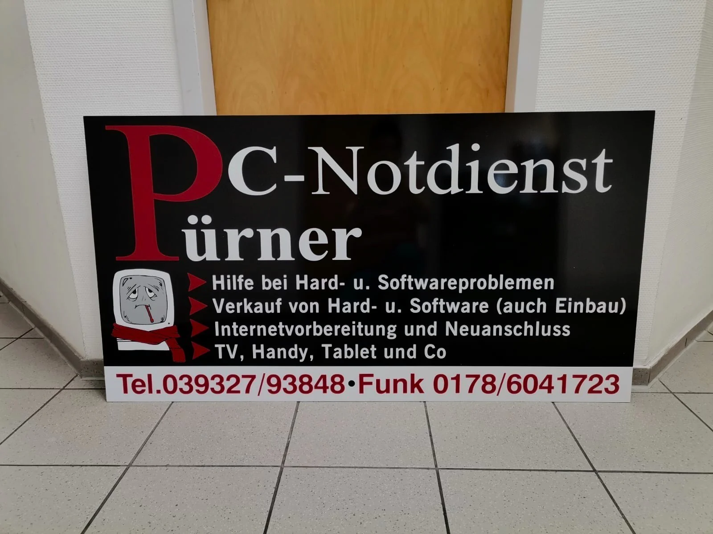
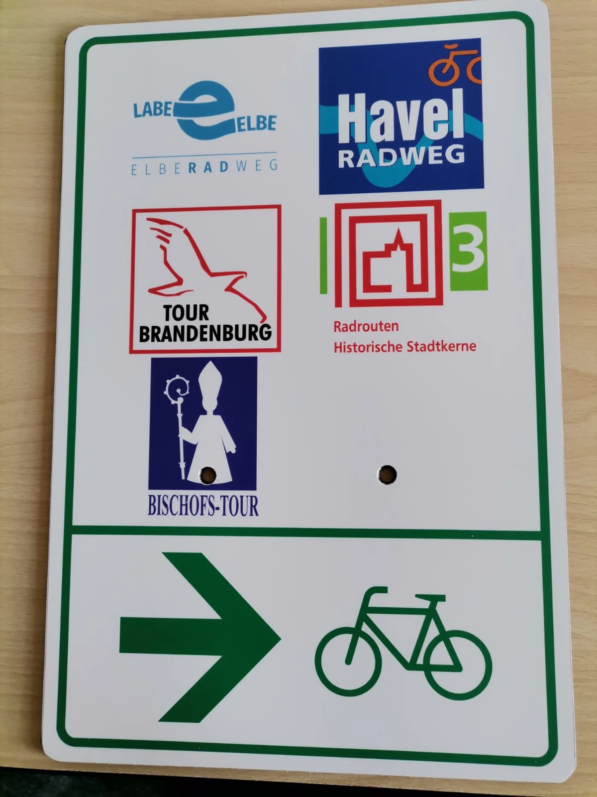
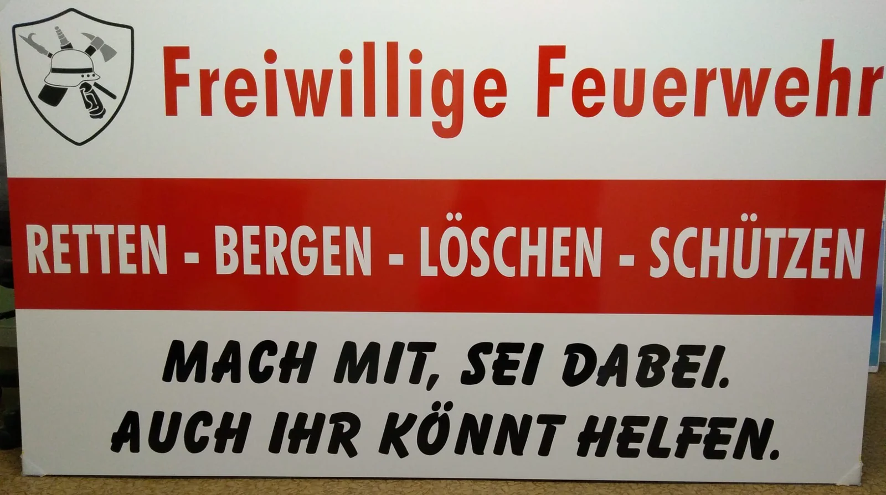
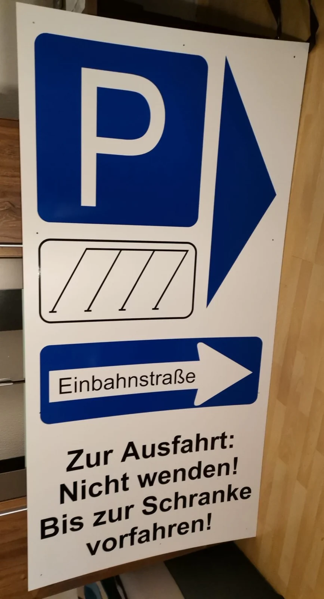

Schilder & Sicherheitskennzeichnung in Stendal
Firmen-, Praxis- und Türschilder, Wegweiser und Bauschilder aus Alu-Dibond, Acrylglas oder Forex – klar, professionell und exakt auf Ihren Unternehmensauftritt abgestimmt.
Unsere Leistungen
Firmen- & Praxisschilder
- Firmen- und Eingangsschilder
- Praxis- und Kanzleischilder
- Türschilder
- Namens- und Klingelschilder
- Wechselbare Türschildsysteme
Werbe- & Acrylglasschilder
- Werbeschilder und Werbetafeln
- Acrylglas- und Plexiglasschilder
- Immobilien- und Verkaufsschilder
Orientierung, Parken & Bau
- Wegweiser und Orientierungsschilder
- Übersichts- und Etagenschilder
- Türaufkleber und Öffnungszeiten
- Parkplatz- und Verbotsschilder
- Bauschilder und Bautafeln
Acrylglasschilder für Praxis, Kanzlei und Empfang
Wir fertigen Acrylglasschilder auch in Stärken über 4 mm und auf Wunsch mit Abstandshaltern. Das Motiv bringen wir per Digitaldruck, mit geplotteter Folie oder im UV-Direktdruck auf.
Welches Material zu Ihrem Standort passt – Acrylglas, Alu-Dibond oder Forex –, klären wir vor dem Angebot.
Referenzarbeiten




Mehr Referenzen im Portfolio.
Sicherheits- und Pflichtkennzeichnung
Wer Beschäftigte hat, braucht mehr als ein Firmenschild. Die Arbeitsstättenverordnung schreibt eine Sicherheitskennzeichnung vor, und bei Umbau, Nutzungsänderung oder einer Begehung durch die Berufsgenossenschaft muss sie aktuell sein. Diese Kennzeichnung fertigen wir im selben Haus wie Ihre Werbeschilder – gestaltet, gedruckt und auf Wunsch montiert. Das reicht vom Flucht- und Rettungsplan über Sicherheitszeichen bis zur Rohrleitungskennzeichnung.
Flucht- und Rettungspläne nach ASR A2.3
Wir setzen Ihren Grundriss in einen Flucht- und Rettungsplan nach der Technischen Regel für Arbeitsstätten ASR A2.3 um. Eingezeichnet werden Flucht- und Rettungswege, der Standort „Sie befinden sich hier“, Sammelstellen, Feuerlöscher und Erste-Hilfe-Einrichtungen. Üblich ist das Format A3 auf 3 mm Alu-Dibond; ebenso möglich sind Digitaldruckaufkleber oder größere Formate für Hallen und Treppenhäuser.
Sicherheitszeichen nach DIN EN ISO 7010
Rettungszeichen (E, grün)
Notausgang, Erste Hilfe, Sammelstelle, Notruftelefon
Brandschutzzeichen (F, rot)
Feuerlöscher, Löschschlauch, Brandmelder
Verbotszeichen (P, rot)
Rauchen verboten, Zutritt für Unbefugte verboten
Gebotszeichen (M, blau)
Schutzbrille, Gehörschutz, Sicherheitsschuhe und weitere PSA
Warnzeichen (W, gelb)
Elektrische Spannung, Flurförderzeuge, Rutschgefahr
Rohrleitungskennzeichnung nach DIN 2403
In Produktion, Technikzentrale und Heizraum muss erkennbar sein, was durch eine Leitung fließt. DIN 2403 regelt das über den Durchflussstoff: Jede Kennzeichnung nennt den Stoff im Klartext, zeigt mit einem Pfeil die Fließrichtung und trägt die Farbe der jeweiligen Stoffgruppe – Wasser grün, Wasserdampf rot, Luft grau, brennbare Gase gelb, Säuren orange, Laugen violett, Sauerstoff blau. Bei Gefahrstoffen kommen die Symbole nach GHS dazu.
Wir fertigen die Bänder und Schilder passend zum Rohrdurchmesser, auf Wunsch als selbstklebende Folie oder als Steckschild für schwer zugängliche Leitungen.
Kennzeichnung im laufenden Betrieb
Böden & Treppen
Boden- und Treppenmarkierungen, Stufenkanten und Verkehrswege
Räume & Regale
Raum- und Türnummern, Ordnungs- und Regalkennzeichnung
Anweisungen & Maschinen
Betriebsanweisungen und Maschinenkennzeichnung nach Ihrer Vorgabe
Gelände & Parkplätze
Sammelstellen- und Parkplatzbeschilderung im Außenbereich
Was wir nicht übernehmen: die brandschutzrechtliche Prüfung und Abnahme. Die Inhalte stimmen wir mit Ihren Unterlagen ab – mit dem Brandschutzkonzept, dem Grundrissplan oder Ihrer Fachkraft für Arbeitssicherheit. Gestaltung, Produktion und Montage kommen dann von uns.
Häufige Fragen zu Schildern und Kennzeichnung
Aus welchem Material fertigen Sie Schilder?
Am häufigsten aus Aluverbundplatte (Alu-Dibond) in 2, 3 und 4 mm Stärke – stabil, wetterfest und formstabil auch in großen Formaten. Für den Innenbereich und leichtere Anwendungen nutzen wir PVC-Hartschaum (Forex) in 3 mm. Außerdem fertigen wir Schilder aus Acrylglas, auch in Stärken über 4 mm und auf Wunsch mit Abstandshaltern. Beschriftet wird per Digitaldruck oder mit geplotteter Folie, je nach Motiv und Standzeit.
Fertigen Sie auch gravierte oder beleuchtete Schilder?
Nein. Gravurschilder, Leuchtreklame, Leuchtkästen und 3D-Buchstaben gehören nicht zu unserem Angebot. Wir fertigen Schilder im Digitaldruck oder mit geplotteter Folie – auf Alu-Dibond, Forex oder Acrylglas, auf Wunsch mit Abstandshaltern. Einen Schriftzug an der Hauswand tragen wir traditionell mit hochwertiger Dispersionsfarbe direkt auf die Fassade auf.
Erstellen Sie Flucht- und Rettungspläne?
Ja. Wir fertigen Flucht- und Rettungspläne nach ASR A2.3 auf Grundlage der Arbeitsstättenverordnung, üblicherweise im Format A3 auf 3 mm Alu-Dibond. Die Planinhalte stimmen wir mit Ihren Unterlagen ab; die brandschutzrechtliche Abnahme selbst gehört nicht zu unserem Leistungsumfang.
Nach welcher Norm fertigen Sie Sicherheitszeichen?
Nach DIN EN ISO 7010. Diese Norm legt die Piktogramme europaweit einheitlich fest – Rettungszeichen (E), Brandschutzzeichen (F), Verbotszeichen (P), Gebotszeichen (M) und Warnzeichen (W). Damit ist Ihre Kennzeichnung auch für auswärtige Besucher und Mitarbeitende ohne Erklärung verständlich.
Kennzeichnen Sie auch Rohrleitungen?
Ja, nach DIN 2403. Die Kennzeichnung richtet sich nach dem Durchflussstoff und nennt ihn im Klartext, zeigt mit einem Pfeil die Fließrichtung und trägt die Farbe der Stoffgruppe, etwa grün für Wasser, rot für Wasserdampf oder gelb für brennbare Gase. Wir fertigen die Bänder und Schilder passend zum Rohrdurchmesser, als selbstklebende Folie oder als Steckschild.
Montieren Sie die Schilder auch vor Ort?
Ja, auf Wunsch übernehmen wir die Montage – in Stendal, der gesamten Altmark und in Magdeburg; bei Bedarf nehmen wir vorab vor Ort Maß. Außerhalb der Region montieren wir nach Absprache auch bundesweit. Alternativ liefern bzw. versenden wir montagefertig, oder Sie holen bei uns in Stendal ab.
Kann ich eigene Druckdaten liefern?
Ja, am besten als PDF oder Vektordatei. Wenn nichts vorliegt, übernehmen wir die Gestaltung komplett – vom Entwurf über Ihre Freigabe bis zum fertigen Schild.
Sind die Schilder für den Außenbereich geeignet?
Ja. Wir arbeiten mit UV-beständigen Materialien und witterungsfesten Folien, damit Farben und Konturen über Jahre erhalten bleiben. Welcher Aufbau sinnvoll ist, hängt von Standort, Sonneneinstrahlung und gewünschter Standzeit ab – das klären wir vor dem Angebot.
Fertigen Sie auch Einzelstücke?
Ja, vom einzelnen Türschild bis zur kompletten Serie für mehrere Standorte. Gerade bei Pflichtkennzeichnung sind Einzelpläne und kleine Stückzahlen der Normalfall.
Wie schnell bekomme ich ein Angebot?
In der Regel melden wir uns innerhalb eines Werktages. Das Angebot ist kostenlos und unverbindlich; den Fertigungstermin stimmen wir verbindlich mit Ihnen ab.
Schilder für Stendal, die Altmark und Magdeburg
Schilder und Sicherheitskennzeichnung montieren wir in Stendal und der gesamten Altmark – in Tangermünde, Osterburg, Havelberg, Gardelegen, Salzwedel sowie in Magdeburg und Umgebung; bei Bedarf nehmen wir vorab Maß. Schilder versenden wir auf Anfrage auch bundesweit, die Montage außerhalb der Region nach Absprache. Jetzt unverbindlich anfragen →